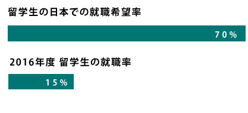
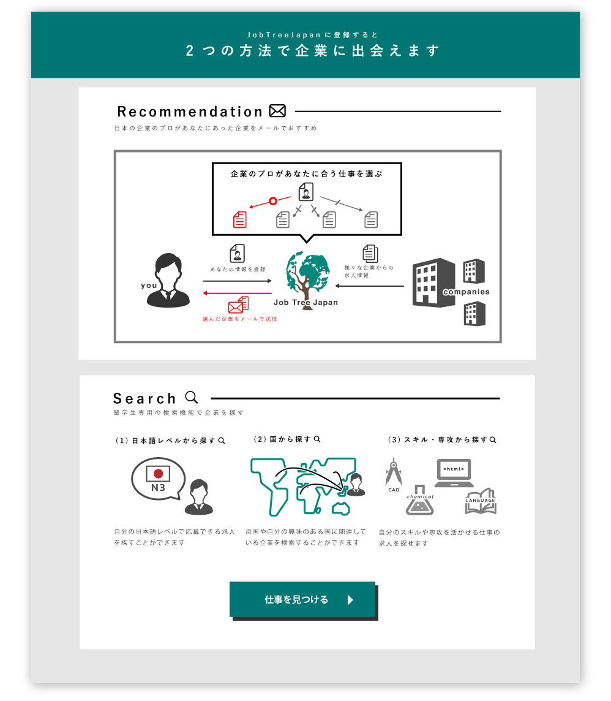
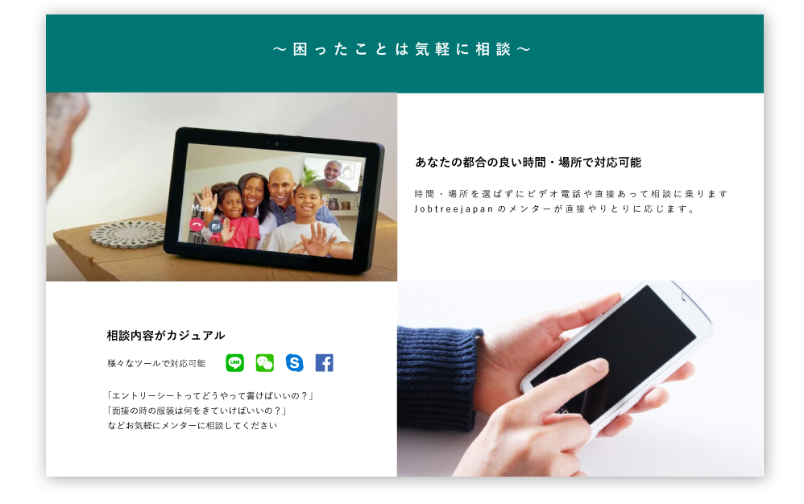
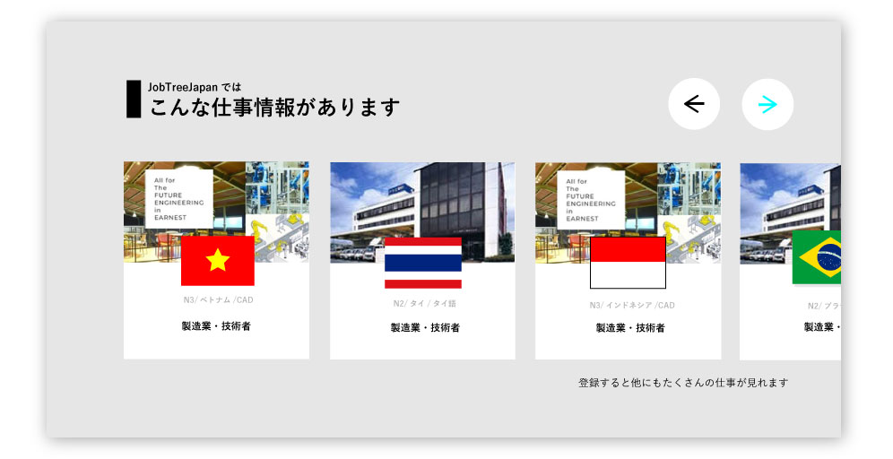

留学生が日本で夢をつかむために
BACKGROUND
優秀な留学生を獲得するために
近年、日本の市場は全世界に広がっている。それに伴い多くの企業がグローバルに働ける人材を求めている。そのため優秀な外国人留学生の獲得が課題となっている。しかし現状は日本と母国での就職活動の文化の違いや、求めているキャリアパスと一致している企業がなかなか見つからないなど、多くの外国人留学生は日本での就職を諦めている。
TARGET
日本で就職したい留学生
日本で就職をしたいが、外国と日本では就職活動の時期や文化が大きく違い、専門職、総合職や一般専門職の違い、日本独特のや就活ルールなどに多くの留学生が悩まされている現状である。
DESIGN CONSEPT
多国籍なユーザーが安心して理解、活用できるサイトにする
日本語や英語が母国語じゃないユーザーでも、直感的に理解できるように、イラスト、写真やアイコンを使ってわかりやすいデザインにしたり、載せる文言、文章の量などなるべくスムーズサイトを利用してもらえるように工夫した。
サービスの目標やサイトの設計、運用から考え、実際に画面のデザインを行った。また、プロトタイプによるユーザーテストもエンジニア担当と一緒に行った。
プロトタイプと実際に運用を行い、留学生のニーズを分析し何回も作り直しを重ねた。
COMMENTARY
サービスの目標
企業と留学生をマッチングさせる
そのために留学生に登録をしてもらい、留学生各々に合うの企業の情報をメールで送ったり、留学生が求めている企業を検索してもらう。多くマッチングさせるにはこのサービスへの登録者数を増やすことが重要である。
問題点
トップページの改善
従来のサイトでどのページから多く登録が行われているか解析したところ、イベントページや求人情報からの登録者数が多く、逆にトップページからの登録者数が5~10%と多くのユーザーがトップページで離脱しており、登録ページに進んでいないことがわかった。
ターゲットの分析
ユーザーテストや実際に留学生にアンケートを行い留学生が求めている価値を分析した。どの画面が一番見られているか解析した。留学生に様々な傾向が見られた。
実際のプロダクト
登録するメリットが一目でわかるデザイン
イラストを使って企業の情報をどのように得られるかこのサービスに登録するメリットを分かりやすく説明
安心感のあるデザイン
以来のサイトではトップページで特に相談についての画面があまり見られていないことがわかった。job tree japanならではの温かみを伝えるため写真を大きく使い、なるべくシンプルな文言を考えた。
留学生の興味のある情報を
どのような企業の情報が乗っているのかイメージがわかないと登録しづらいと言う声があったので実際の求人情報を乗せた。
結果
改正後一ヶ月のトップページからの登録者数が20~30%に増加した。
次の課題として登録ページに行ったが、そこで離脱している人が見られた。それらの改善を行う予定。